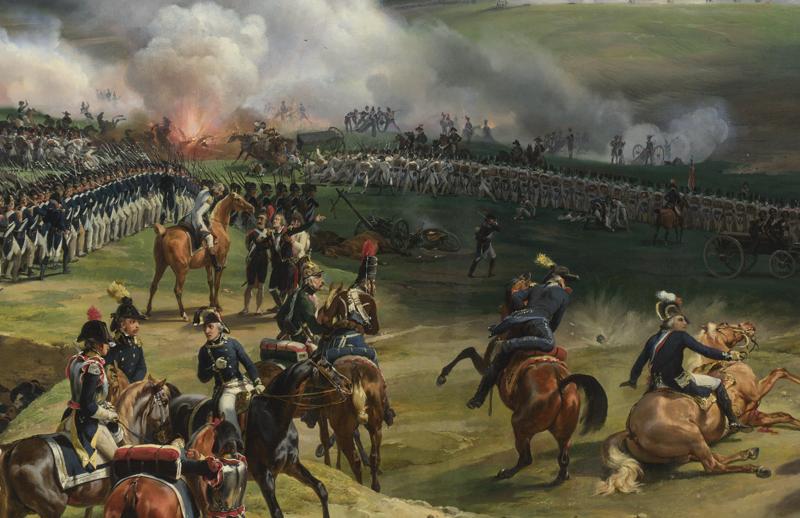
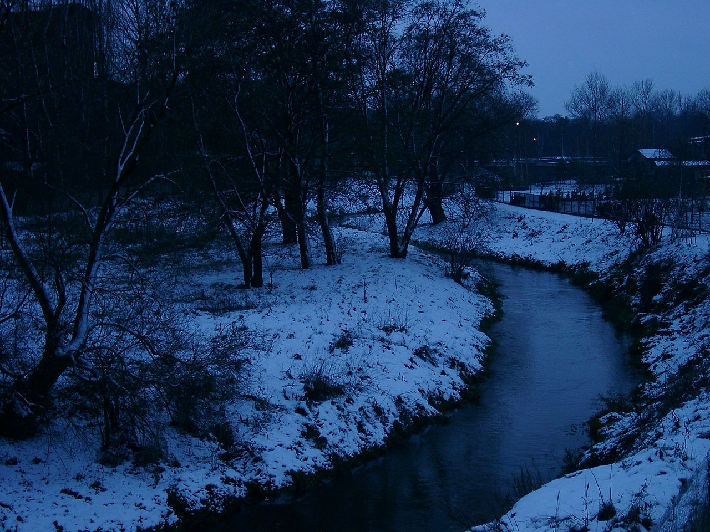
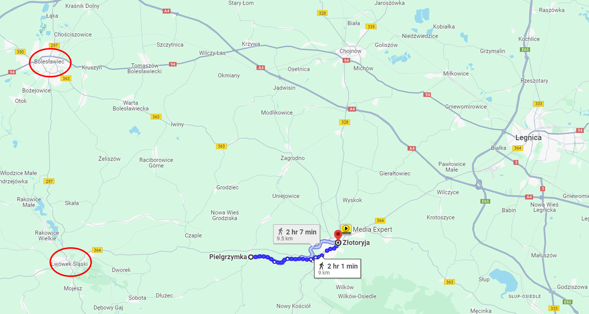

드레스덴을 향하여 (8) - 대환장 파티
게시: 2024-01-29T06:30:14+09:00
8월 21일의 뢰벤베르크 전투에서 연합군이 많은 사상자를 내고 후퇴하면서도 단 한 명의 포로도 내지 않았다는 것은 슐레지엔 방면군 병사들의 질적 수준이 황급히 징집된 병사들로 이루어진 그랑다르메보다 더 높았다는 것을 뜻했습니다. 사람이 미우면 그 사람이 손에 쥔 숟가락도 밉다더니, 후퇴하여 한숨을 돌린 이후 블뤼허와 그나이제나우는 평소 밉상이던 요크 장군 휘하의 국민방위군(Landwehr) 부대들의 어설픈 전투에 대해 비난을 퍼부었습니다. 그러나 정작 부하들이 얼마나 급조되어 끌려온 병사들인지 잘 알고 있던 요크 장군은 이 국민방위군 부대들이 어려운 상황에서도 용기를 잃지 않고 첫 전투를 훌륭하게 싸워냈다고 칭찬했습니다. 가령 뢰벤베르크 인근의 전투에서 이 국민방위군 부대들 중 유격병 대대에게 주어진 임무는 산개하여 적의 전진을 방해하는 것이었는데, 이 대대는 마치 정규군 전열보병처럼 전열을 이루고 적에게 총검 돌격을 수행하다가 프랑스군의 포도탄 세례에 많은 피해를 내고 퇴각해야 했습니다. 왜 그런 식으로 지휘를 했느냐는 힐책을 받자, 그 부대의 코세키(Kossecki) 대위라는 장교는 '숙련된 장교들이 없는 우리 부대에서 병사들을 산개시켰다면 그대로 흩어졌을 것인데, 부대가 거미새끼처럼 흩어지는 굴욕을 당하느니 차라리 모여서 죽는 것이 낫다'라고 답변을 했습니다. 실제로 이들은 포도탄을 얻어맞고 후퇴한 이후에도 다시 총검 돌격을 시도했고, 결국 탄약이 다 떨어진 이후에야 후퇴했습니다. 이 광경을 눈 앞에서 본 요크 장군은 이들이 열을 지어 질서정연하게 후퇴할 때 그들에게 경례를 하며 칭찬했습니다. 이건 뜻하는 바가 큽니다. 이들의 모습은 프랑스 혁명 초기에, 전투에는 미숙하지만 공화국을 지키겠다는 애국심으로 모인 프랑스 자원병들이 더 우세한 프로이센 정규군과 싸워 이긴 발미(Valmy) 전투를 연상시킵니다. 다만 이번에는 프랑스군과 프로이센군의 처지가 뒤바뀌었고, 또 비록 프로이센군이 더 절실한 마음으로 싸웠지만 발미 전투에서의 프랑스군처럼 이기지 못하고 결국 후퇴해야 했다는 점이 달랐습니다. 비록 블뤼허가 다소 어설픈 지휘를 하기는 했지만, 이렇게 프로이센군은 용감하게 싸워 그런 미숙한 부분을 상쇄시켰습니다.

(1791년 발미 전투입니다. 괴테가 현장에 있었던 것으로 유명한 이 전투에서 사실 저 자원병들은 그냥 저렇게 전열을 유지한 채 버티고 서는 것이 주된 역할이었고, 실제 전투는 포병대가 다 했다고 할 수 있습니다. 그러나 그게 저 자원병들의 공로를 깎아내릴 이유가 되는 것은 아닙니다. 저렇게 살과 뼈를 찢어놓는 포탄이 날아오는데도 도망치지 않고 꼿꼿이 서서 버티는 것이 결코 쉬운 일이 아니기 때문입니다. 발미 전투에 대한 자세한 이야기는 https://nasica-old.tistory.com/6862441 를 참조하십시요.)

(이 유명한 발미 전투 그림은 1826년 오라스 베르네(Horace Vernet)가 그린 작품인데, 이렇게 확대해보면 roundshot이 땅바닥을 치고 튀어오르는 모습과 보병 전열 앞에 포병대가 방열한 모습이라든가 저 멀리 폭발이 일어나서 말이 놀라는 모습 등 매우 생생한 전투를 묘사한 명작입니다.)
프로이센군은 자국 영토에서 조국의 해방을 위해 외국 침략자와 싸웠기에 열심히 싸운다고 치고, 러시아군은 왜 열정적으로 싸웠을까요? 당연히 러시아군은 열정적으로 싸우지는 않았습니다. 뢰벤베르크 전투에서 패배하고 물러난 뒤, 블뤼허는 필그람스도르프(Pilgramsdorf, 폴란드어로 Pielgrzymka 피엘그짐카)까지 후퇴한 랑제론을 직접 방문하여 쉬넬 다익셀(Schnelle Deichsel, 폴란드어로 Skora 스코라)이라는 이름의 작지만 물결이 거센 시냇물을 1차 방어선으로 삼고 나폴레옹의 동태를 살피도록 지시했습니다. 랑제론은 그 지시는 러시아군 총사령관 바클레이의 명령 취지, 즉 나폴레옹의 주력과 부딪힐 경우 물러나라는 지시와는 어긋나는 것이며 전군이 즉각 카츠바흐(Katzbach) 강을 건너 후퇴해야 한다고 주장했습니다. 블뤼허는 이 러시아군 소속의 당돌한 프랑스인 부하 장군의 항의에 속으로 부아가 끓어올랐지만 꾹 참고, 만약 나폴레옹이 전력을 다하여 추격해온다면 결국 카츠바흐 강을 건너 후퇴하겠지만 그렇게 후퇴할지 여부는 오로지 자신이 결정할 것이라고 못을 박았습니다.
하지만 그렇게 말한 블뤼허가 다른 곳으로 떠나자마자, 랑제론은 블뤼허의 엄명에도 아랑곳 없이 러시아군을 이끌고 즉각 8km 정도 떨어진 골드베르크(Goldberg, 폴란드어로 Złotoryja 쯔워토리야)를 향해 후퇴를 시작했습니다.

(쉬넬 다익셀, 즉 스코라 강입니다. 강이라기보다는 그냥 시냇물로서 보시다시피 매우 좁습니다. 이 정도의 시냇물을 방어선으로 삼아 나폴레옹의 공격을 막으라고 하니 랑제론이 반발한 것도 이해는 갑니다.)

(필그람스도르프에서 골드베르크까지는 2시간 행군거리이고, 골드베르크부터 남동쪽의 야우어까지는 또 5시간 정도 거리입니다. 지도 왼쪽의 빨간 원 두개는 각각 분츨라우(북쪽)와 뢰벤베르크(남쪽)입니다.) 이렇게 무시를 당하고도 블뤼허는 그저 또 모든 것이 오해에서 비롯된 해프닝이라고 웃어넘겼을까요? 다행인지 불행인지, 랑제론이 후퇴를 개시한 뒤 얼마 안되어, 막도날의 제11군단이 우르르 나타났습니다. 랑제론이 남겨둔 후위대가 제11군단의 전위대와 싸우며 조금씩 후퇴하는 동안, 블뤼허는 이 소식을 듣고 현장으로 달려와 상황을 본 뒤, 어쩔 수 없이 요크와 자켄에게도 후퇴하라고 명령을 내렸습니다.
블뤼허는 길길이 뛰며 골드베르크로 전령을 보내 랑제론에게 되돌아오라는 명령을 내리려 했지만, 랑제론은 거기에도 없었습니다. 골드베르크 주민들에게 물어보니, 이미 랑제론의 러시아군 부대들은 이미 골드베르크를 지나 멈추지 않고 거기서 추가로 약 22km 떨어진 야우어(Jauer, 폴란드어로 Jawor 야보르) 방향으로 가버렸다고 했습니다. 그야말로 총사령관으로서의 위신이 땅에 떨어지는 순간이었습니다. 블뤼허의 전령들은 결국 야우어 근처까지 뒤쫓아간 뒤에야 랑제론을 따라잡았고, 즉각 돌아오라는 엄명을 전달하여 간신히 골드베르크로 랑제론의 군단을 끌고 올 수 있었습니다.
이렇게 대국의 위엄을 내세운 랑제론의 명령 불복종은 생각보다 더 큰 결과를 낳았습니다. 일단 블뤼허는 여전히 나폴레옹의 공격은 그저 자신들을 몰아내려고 한 것을 뿐 자신들을 격멸하기 위한 진짜 공세는 아니었다고 믿고 있었으며, 그랑다르메 부대들이 자신들을 그다지 열정적으로 추격하지 않는 것을 보고는 나폴레옹은 아미 드레스덴 방향으로 돌아갔을 것이라고 주장했습니다. 실제로는 블뤼허가 틀렸기도 했고, 동시에 맞기도 했습니다. 실제로 나폴레옹은 그 순간 블뤼허의 주력부대를 격멸하기 위해 로리스통의 제5군단과 함께 골드베르크로 직접 오고 있었습니다. 그런데 랑제론의 무단 후퇴로 인해 블뤼허의 다른 군단들, 즉 요크와 자켄의 군단들까지 일제히 물러나야 했지요. 그것이 나폴레옹에게 뭔가 이상한 낌새를 눈치채게 했던 것 같습니다. 프랑스군의 척후병들과 첩자들은 블뤼허의 부대들이 일제히 카츠바흐 강을 향해 후퇴 중이라는 소식을 나폴레옹에게 전했고, 나폴레옹은 그에 매우 흡족해하며 당장은 전투가 없을 것이라고 생각하고는 골드베르크로 향하던 말을 돌려 다시 뢰벤베르크로 돌아갔습니다. 여기서 좀 헷갈리는 부분이 있습니다. 나폴레옹이 드레스덴에 이중 삼중으로 방어 준비를 해놓고 여기로 온 이유는 분명히 연합군의 주력이 보헤미아로 이동한 사이에 약해진 슐레지엔 방면군을 박살내는 것이었습니다. 그런데 추격에 박차를 가해도 부족할 판국에 블뤼허의 부대들이 카츠바흐 강으로 도망친 것에 기뻐하며 뢰벤베르크로 되돌아갔다고요? 결국 나폴레옹은 드레스덴이 아무래도 껄끄러웠던 것입니다. 만약 랑제론의 무단 후퇴가 없었다면 블뤼허는 나폴레옹의 정면 공격에 대해 꽤 질긴 저항을 펼쳤을 것이고, 나폴레옹은 블뤼허와 멱살을 쥐고 뒹구느라 후방에서 무슨 일이 일어나든 쉽게 병력을 뒤로 물리지 못했을 것입니다.
그러나 역사에서 '만약'이라는 것은 의미가 없습니다. 뭔가 조짐이 이상하다고 생각한 나폴레옹은 뢰벤베르크에서 하룻밤을 보낸 뒤, 다음날인 22일 더 서쪽인 괴를리츠로 이동하면서 막도날 등에게 편지를 보내며 이후의 작전 방향은 적의 움직임에 따라 정하겠다는 뜻을 비쳤습니다. 또한 외무부 장관인 마레에게 편지를 구술하면서, '슐레지엔 방면군이 이렇게 전투를 회피하고 도망치는 이유가 드레스덴으로 적군이 진격하기 때문이라면, 그건 자신에게 정말 행운이며, 거기서 적군을 궤멸시키겠다'라고 호언장담 했습니다. 그리고 '말이 씨가 된다'라는 속담을 입증이라도 하듯이, 그 다음날인 8월23일 오후, 나폴레옹의 사령부로 급보가 날아옵니다. 드레스덴의 남쪽 관문격인 피르나(Pirna)에 주둔하고 있던 생시르 원수가 보낸 것이었는데, 그 내용은 역시나 보헤미아 방면군이 드레스덴을 향하고 있다는 것이었습니다. 그러나, 구체적인 부분은 나폴레옹이 바라는 내용이 전혀 아니었습니다. 전해지는 바에 따르면 이제 막 늦은 점심을 먹고 있던 나폴레옹은 그 보고서를 읽다가 손에 들고 있던 와인잔을 식탁에 쾅 내리치며 깨뜨렸다고 합니다. 연합군이 쳐들어오는 경로가 나폴레옹이 예상한 지타우가 아니었던 것입니다. Source : The Life of Napoleon Bonaparte, by William Milligan Sloane Napoleon and the Struggle for Germany, by Leggiere, Michael V
Napoleon: The Man Behind the Myth, by Adam Zamoyski https://en.wikipedia.org/wiki/Skora https://en.wikipedia.org/wiki/Battle_of_Valmy